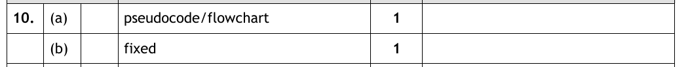

Introduction
Think of Bart Simpson writing the same line on the blackboard a hundred times. Now imagine programming the same way — printing a message nine times with nine identical print statements. It works… but suppose you wanted to change the message. You'd have to go back and edit every single line, taking up time (and boring us).
Loops solve this: write the code once, and tell the computer how often to run it. There are two kinds at National 5 — fixed loops, which repeat a set number of times, and conditional loops, which repeat while a condition is true.
Key Terms
Fixed Loops
Here's the "Bart Simpson" version, and the loop version, side by side in spirit:
print("Hello world")
print("Hello world")
print("Hello world")
print("Hello world")
print("Hello world")
for counter in range(5):
print("Hello world")
Same output, one line of actual work. The code inside the loop (indented, just like an if) runs 5 times because of range(5). Want 100 repeats? Change one number.
counter is the loop variable. It could be called anything — even bananas — the program runs exactly the same. But like all variables, a meaningful name is better, and counter says what it does.
In SQA reference language, a fixed loop looks like this:
REPEAT 5 TIMES
SEND "Hello world" TO DISPLAY
END REPEAT
Fixed Loops — Video Explanation
Using the Loop Variable
The loop variable isn't just for show — it counts up by 1 on every pass, and your code can use it. range(5) gives the values 0, 1, 2, 3, 4 (starting from zero — everything in computing counts from zero!).
# Print the 7 times table
for counter in range(10):
answer = counter * 7
print(str(counter) + " x 7 = " + str(answer))
On the first pass counter is 0, so it prints "0 x 7 = 0" — yes, the table really does start at zero! On the second pass it's 1 — "1 x 7 = 7" — and so on up to 9. One calculation, written once, run ten times with a different value each time. That's the power of the loop variable.
Loop Stepper
The times table program above, one pass at a time. Press Step and watch the loop variable tick up, the calculation reuse its new value, and the matching output line appear — then see exactly why the loop stops after pass 10.
Conditional Loops
Fixed loops are great when you know how many repeats you need. But how many guesses will it take to win a guessing game? No idea — it depends on the player. When you can't know the number of repeats in advance, use a conditional loop: in Python, a while loop.
Think of it as a cross between a loop and an if statement — it uses exactly the same conditions, but instead of running the block once, it runs it over and over while the condition stays true:
import random
# The computer picks a secret number
secret = random.randint(1, 10)
guess = int(input("Guess the number (1-10): "))
# Keep going while the guess is wrong
while guess != secret:
print("Nope, try again!")
guess = int(input("Guess the number (1-10): "))
print("Got it! The number was " + str(secret))
The loop might run once, ten times, or not at all (a lucky first guess means the condition starts false and the loop is skipped entirely). The program only escapes when the condition guess != secret becomes false.
WHILE guess != secret DO
SEND "Nope, try again!" TO DISPLAY
RECEIVE guess FROM (INTEGER) KEYBOARD
END WHILE
Conditional Loops — Video Explanation
Infinite Loops — Don't Get Stuck
With a conditional loop comes a responsibility: something inside the loop must be able to change the condition. If nothing can ever make it false, you've built an infinite loop, and your program will run forever:
# 100 will always be more than 5...
while 100 > 5:
print("One hundred is still more than five")
Notice why the guessing game doesn't get stuck: the input line inside the loop gives guess a chance to change on every pass. Take that line out and the player's first wrong guess traps them forever.
Spotting Loops in a Design
In the exam, loops are usually tested through designs: you're shown a structure diagram, flowchart or pseudocode and asked to state the type of loop. Each notation hides its loop in a different place, but the test is always the same — read the loop's wording and ask the question from the tip above: is the number of repeats known in advance?
| Notation | Where the loop hides | Fixed looks like | Conditional looks like |
|---|---|---|---|
| Structure diagram | The rounded loop symbol | "Loop 20 times" or "Repeat for each child" | "Repeat until no more passengers" |
| Flowchart | A decision whose arrow points back up | "Served 20 groups?" | "Any more customers?" |
| Pseudocode | A loop line with indented steps below it | "Loop 20 times … End loop" | "While … End while" |
Notice the flowchart trap: flowcharts draw every loop as a decision, even fixed ones — "Served 20 groups?" is still a fixed loop, because 20 is known before the loop starts. Don't let the question mark fool you into writing "conditional".
Here's exactly this skill in a past paper question — you may recognise it from the Design page, where the full three-part question is walked through. This is the loop part:
A sightseeing boat holds 100 passengers, with Saturday's tickets numbered 1–100 and Sunday's numbered 101–200. The program checks each passenger's ticket is valid for today as they board, and counts the passengers. Here is the design:
![Past paper question: a structure diagram titled PROGRAM daily ticket analyser. Its branches are: set number of passengers to 0.00; get ticket range, which refines into get lower ticket number and get upper ticket number; a rounded loop symbol reading repeat until no more passengers, which contains get ticketNumber from passenger and a selection asking is ticketNumber within range for today, with yes leading to add 1 to number of passengers and no leading to display Ticket Refused; and finally display total number of passengers.](../resources/sdd/worked_examples/n5_des_q2-1.png)
State the type of loop required when implementing this design. (1 mark)
How to tackle it: Find the rounded loop symbol and read its wording: "repeat until no more passengers". Does the program know in advance how many passengers will board? No — it could be 3 or 100. It keeps going until a condition is met, so this is a conditional loop. If the symbol said "repeat 100 times", it would be a fixed loop.
Watch the trap: don't be distracted by the boat holding 100 passengers — the design never says "loop 100 times". The loop's own wording decides, not the numbers in the story.

Only the first row applies here — a) ii) and iii) are covered in the full walkthrough on the Design page. The answer is:
A conditional loop
Now the fixed-loop version — and this one is sneakier, because the loop's wording contains no number at all.
![Past paper question: an event company organises children's parties and would like a program to help calculate the costs of parties. Part of the structure diagram design is shown. The top box reads Program Party Cost. Its branches are: child buffet = £2.00; a selection asking is cake required, with yes leading to cake = £15.00 and no to cake = £0; get number of adults; get number of children; a rounded loop symbol reading start loop for each child, containing get dietary requirements; a selection asking is number of adults plus number of children greater than 20, with yes leading to venue = £0 and no to venue = £50; and cost = child buffet times number of children, plus cake, plus venue. Part a: state another design technique that could be used to design this program, 1 mark. Part b: state the type of loop shown in the design above, 1 mark.](../resources/sdd/worked_examples/n5_loop_q1.png)
How to tackle part a): "Another design technique" means one of the three notations that isn't the one shown. This is a structure diagram — the giveaway symbols are the branching tree, the selection diamonds and the rounded loop. So the answer is either of the other two: pseudocode or a flowchart. (A wireframe designs the user interface, not the program logic, so it doesn't earn the mark here.)
How to tackle part b): Find the loop symbol: "Start loop for each child". No number appears in the wording — but don't jump to "conditional". Ask the real question: is the number of repeats known before the loop starts? Look left: "Get number of children" happens before the loop runs. By the time the program reaches the loop, it knows exactly how many children there are — one pass each. That's a fixed loop.
Watch the trap: this is the mirror image of the Iron Craig boat. There, "repeat until no more passengers" meant the count was never known in advance — conditional. Here the count is a variable rather than a written number, but it's known before the loop begins — fixed. The test is when the program knows, not whether a number is printed on the page.

The answers are:
a) Pseudocode (or a flowchart)
b) A fixed loop
Practice Questions
One design in each notation — read the loop's wording, decide the type, and write your answer down before opening the marking instructions.
A teacher's program collects the house points earned by each of the 30 pupils in a class, then displays the class total. The design is shown below.
1. Set classTotal to 0 2. Loop 30 times 2.1 Ask for the pupil's house points 2.2 Add the points onto classTotal 3. End loop 4. Display classTotal
State the type of loop used in the design.
Marking Instructions
A fixed loop (1 mark)
"Loop 30 times" — the number of repeats is known before the loop starts, because there are exactly 30 pupils in the class.
A car wash charges £6.50 per car and keeps a running total of the day's takings. The design is shown below.
State the type of loop used in the design.
Marking Instructions
A conditional loop (1 mark)
"Repeat until no more cars" — the program cannot know in advance how many cars will turn up; it keeps going until a condition is met.
A machine prints a name badge for each of the 50 pupils attending a school trip. The design is shown below.
State the type of loop used in the design.
Marking Instructions
A fixed loop (1 mark)
50 badges are needed, so the number of repeats is known before the loop starts. Flowcharts draw every loop as a decision, but a decision that counts to a set number is still a fixed loop.